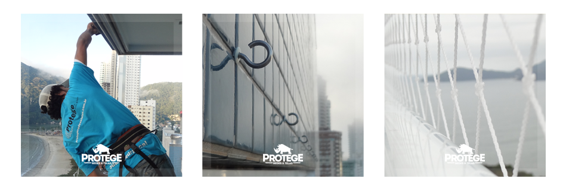

Sacadas e Janelas
Redes de proteção são a melhor opção para quem quer segurança garantida em suas sacadas e janelas. Trabalhamos com cores leves e por isso nossas redes dão um "ar" limpo e agradável, sem poluir visualmente o ambiente.

Materiais Utilizados
Proteção é coisa séria, por isso a protege trabalha com os melhores materiais do mercado. Veja abaixo os materiais utilizados pela nossa empresa.
Rede de Proteção: A rede de proteção utilizada é a rede de polietileno 100% virgem com tratamento especial contra raios ultravioleta. O polietileno é a rede que deve ser utilizada para as sacadas e janelas pois é impermeável e é a mais adequada para resistir a ação do tempo, principalmente no litoral. Na página Poliamida e Polietileno você encontra informações sobre a melhor opção na escolha da rede de proteção e na página O Polietileno você confere as especificações técnicas sobre a rede utilizada pela Protege.
Ganchos: Trabalhamos com dois tipos de ganchos: inox e galvanizado. A escolha do gancho fica a critério do cliente, sendo que o gancho galvanizado tem um custo inferior, porém a sua vida útil é limitada, ao contrário do gancho inox onde a sua durabilidade é vitalícia. Desta forma, caso o cliente escolha o gancho galvanizado a Protege tem o cuidado de verificar periodicamente (a cada dois anos) se o gancho está em bom estado. A Protege também tem a preocupação de utilizar uma distância segura entre os ganchos, por isso a separação entre eles utilizado pela Protege é de 20 a 25 centímetros.
Tirante: Nossos tirantes também são de alta qualidade e por isso trabalhamos com as espessuras mais adequadas que são de 03 e 04 milímetros, conforme o local de instalação.
Buchas: As buchas utilizadas na instalação dos ganchos são especiais para não permitir infiltrações.